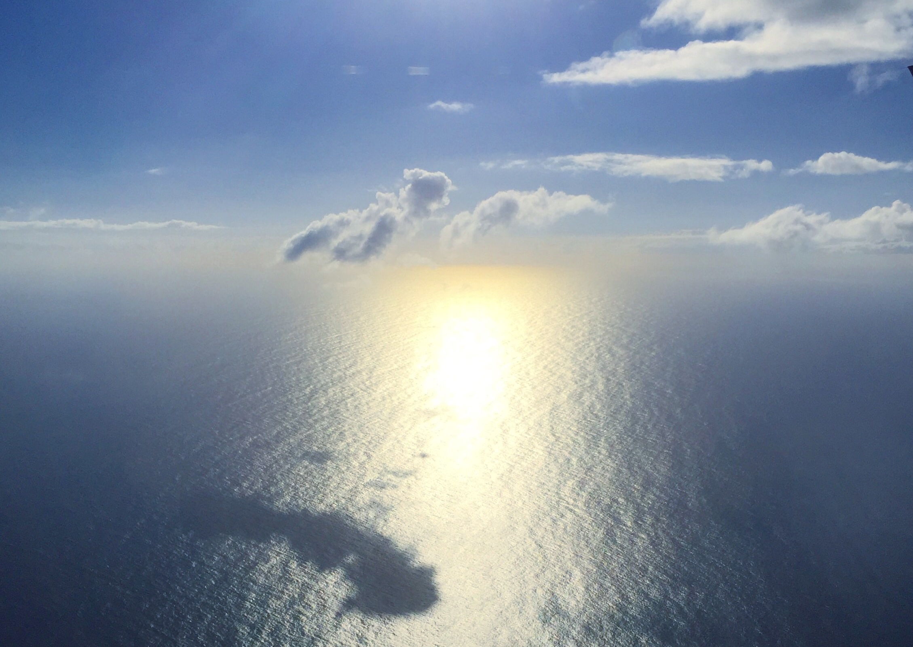
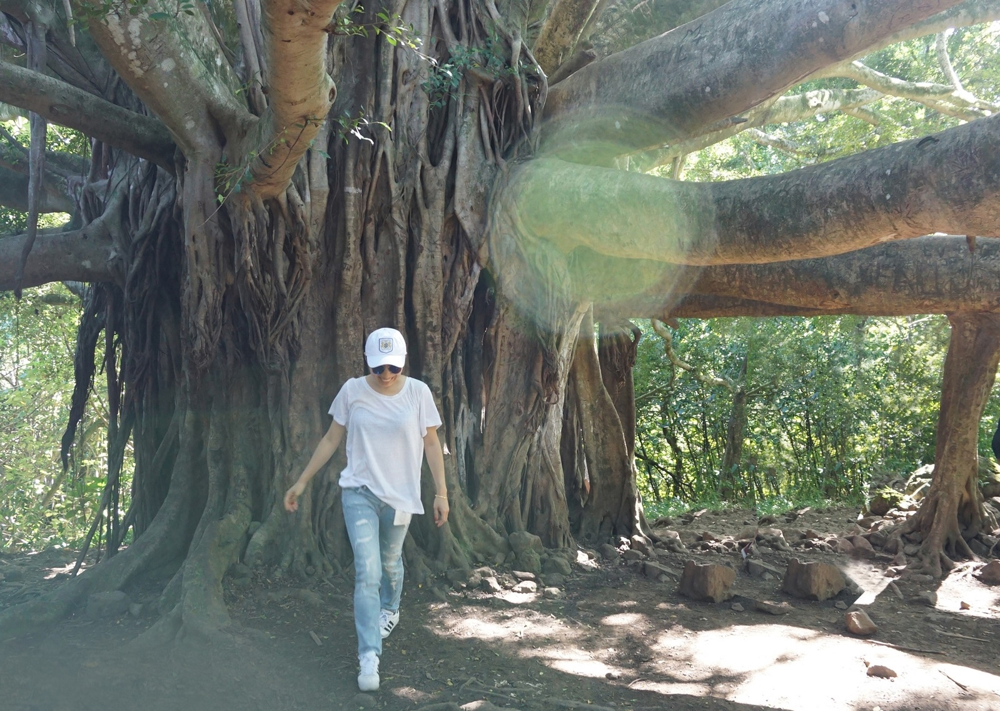

Maui is natural and rugged. Its beauty is raw and dynamic — the kind that stops you mid-step, mid-thought, mid-breath. Saying goodbye to this place is genuinely hard. And I mean that in the way you can't fully prepare for: the kind of hard that catches you at the airport, looking back at the mountains, wondering how you got so lucky.
There are so many ancient stories you want to learn here. So many islands you want to discover. So much positive energy you want to hold onto — not just for the length of a trip, but to carry back into your real life like something precious and fragile that you're determined not to drop.
An Island of the Happiest People
Hawaii is consistently ranked as the state with the highest well-being in the nation. Spending time here, you understand why. There is a spirit to this place — the aloha spirit — that isn't a tourism slogan. It's something you feel the moment you arrive: in how people greet you, in how slowly and intentionally life moves, in the way strangers smile at you on the road as if they already know something good about you.
Island life is a beautiful thing. I learned, almost immediately, to slow down — to stay calm and observe. To let the world come to me a little, instead of always rushing toward it. It sounds simple. It felt revolutionary.
What if the most radical thing you could do was simply stop rushing — and let the beauty of where you are actually reach you?
Days Lived to Their Full Potential
I saw rainbows above the horizon — not once, but most mornings, as if the island offered them casually, generously, the way it offers everything here. I bit into fruits freshly picked from trees, juice running down my hands, tasting nothing like what you find at a grocery store at home. I dove into the clearest water I have ever been in, marine life moving all around me in colors I couldn't name, unconcerned by my presence, going about their ancient lives.
I hung out on colorful beaches and watched the sunrise while tropical birds filled the air with their morning songs. Each night, I stargazed with a glass of wine, the sky above Maui darker and more infinite than any sky I've seen. Serenity was the consistent theme throughout — a true, felt balance between dusk and dawn, between doing and simply being.

Sunrises here feel personal — like the island is offering you something new, just for today.
The Things You Know You'll Miss
I've already started composing the list of what I'll leave behind. Back home, there won't be papayas growing from my balcony. There won't be the unique, singular fragrance of passion fruit on the air, or the ever-popular rainbow shave ice on a warm afternoon, or sweet pineapples that taste like the sun itself. There won't be this ease — this gentle, unscheduled ease of island living that makes you realize how tightly wound your regular life is.
There won't be sunrises and sunsets like these ones. And I'm letting myself feel that loss, because it means the place was real. It means it mattered.
What Maui Really Gave Me
My energy and happiness were at an all-time high while I was here. And I'm making a decision not to let that fade when I return home. Not by pretending I'm still on vacation. But by carrying the mindset that Maui handed back to me: the understanding that each second of the day is a gift.
Maui put me back on track with that. My days at home are special too. The people in my life are worth the same quality of presence. The mornings I wake up in my own bed deserve the same gratitude as the mornings I woke up to those rainbows. I know this intellectually, of course. But Maui made me feel it — which is a different thing entirely, and the only kind of knowing that actually changes how you live.

Everything grows here with an ease that feels like a reminder — life doesn't have to be so hard.
A heart full of new life and gratitude.
I owe this island a big Mahalo. I leave carrying something I didn't arrive with — a renewed sense that my everyday life is worth showing up for, fully, the way I showed up for every hour I had here. That feels like the most generous gift a place can give you.
Mahalo, Maui. Maui Nō Ka ʻOi.P.S. Is there a place in your heart that you are thankful for? I'd love to hear it — please share with me in the comments. ✦